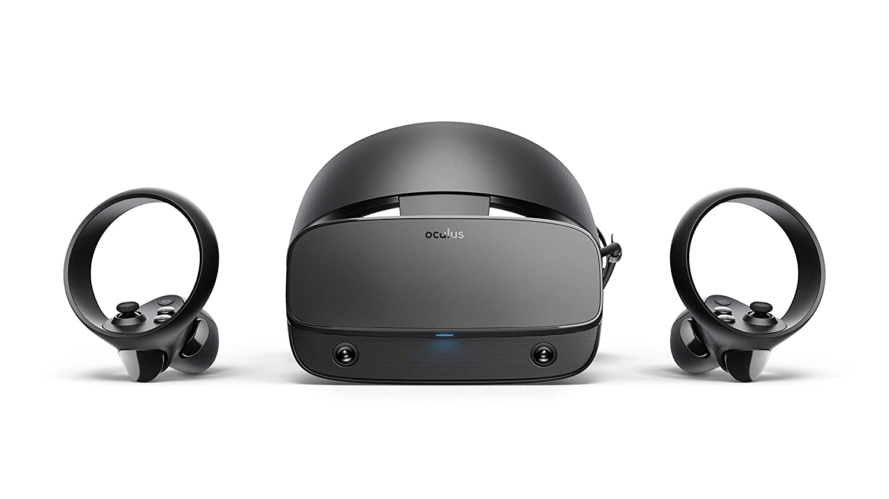
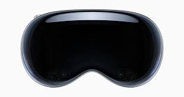

A realidade virtual começou com o primeiro dispositivo sendo um simulador de voo para o exercito americano no ano de 1950. O primeiro simulador de voo parecia muito igual a um aviao real, alterando apenas o facto dos vidros frontais estarem alterados por ecrãs capazes de transmitir a imagem como se tivessem no ar, esta máquina era muito grande comparadamente com os dispositivos mais recentes.
Hoje em dia toda a gente é capaz de ter uns oculos de realidade virtual se conseguir poupar um pouco de dinheiro pois hoje em dia temos disponiveis oculos muito compactos capazes de fazer a mesma coisa que a maquina enorme de 1950.


Estes dois dispositivos foram os mais revolucionários ate à altura. No 2012, os Oculus Rift S são os óculos de realidade virtual mais acessíveis por apenas 400 euros por serem baratos e com uma qualidade relativamente agradável com os concorrentes da empresa Valve, que só os óculos custavam 500 euros sem comandos mas a diferença entre este é a que os Oculus Rift eram "stand alone" o que significa terem um sistema operativo próprio para os mesmos. Os Valve Index precisam obrigatoriamente um computador para os mesmo funcionarem, mas isso também permitia uma qualidade melhor de imagem e de processamento, para além que estes também são vendidos com umas bases para captura de movimento corporal permitindo usar pernas para movimento o que era muito revolucionário para a altura.

Dia 6 de Junho de 2023 foi anunciado os óculos de realidade aumentada o que é um pouco diferente da realidade virtual. Mas isso não tira o direito de estar presente aqui neste trabalho. O óculos de realidade aumentada da Apple, em titulados como Apple Vision Pro, estes estão previstos para ser os óculos que vão revolucionar novamente o mundo da realidade virtual e realidade aumentada deixando possíveis melhorias de qualidade de vida para os óculos de realidade virtual mais antigos, tais como, por exemplo, melhorar interface do utilizador ou substituir A obrigatoriedade de ter sempre comandos, pois sempre assim foi.
O Senhor Zuckerberg é um dos pioneiros da realidade virtual apesar de ter cometido muitos erros e ter tido problemas por isso, pois este senhor criou anti compatitividade, pois o mesmo decidiu tentar comprar todas as empresas que desenvolviam dispositivos de realidade virtual que ele pode. Felizmente ele parou, pois teve de ir a tribunal em que foi obrigado a pagar 390 Milhões de euro soque equivale a 419 Milhões de dólares. A imagem do senhor Zuckerberg está presente no fundo, pois eles foram uma parte importante e, ao mesmo tempo foi quem "bloqueou" um pouco o avanço da tecnologia no ramo da realidade virtual.